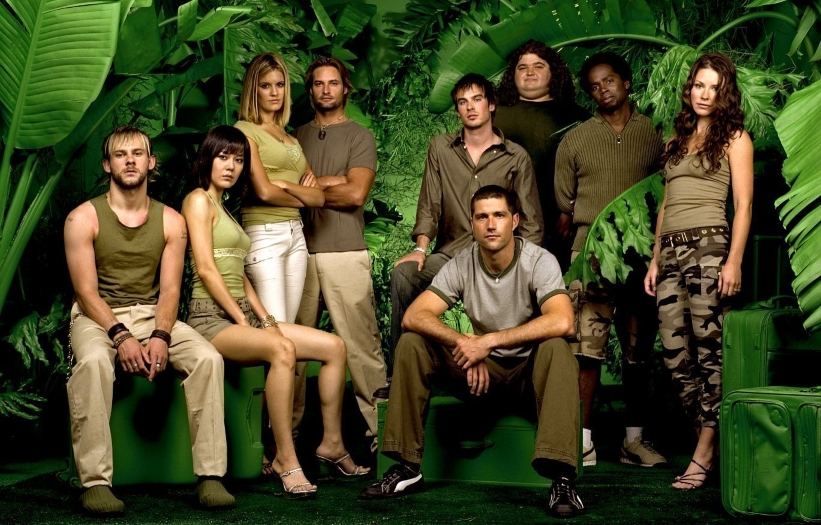
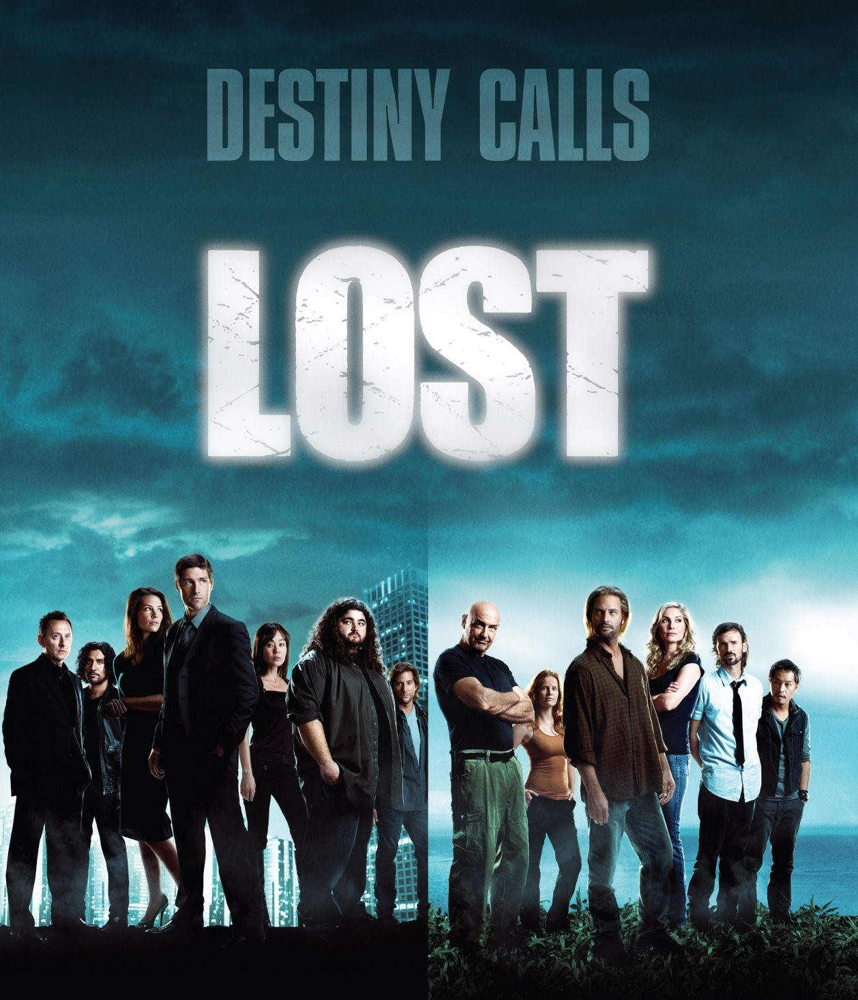

Argumento
Lost es una serie de televisión que gira en torno a un grupo de sobrevivientes de un accidente aéreo, el vuelo 815 de Oceanic Airlines, que se estrella en una isla misteriosa del Pacífico. A medida que los personajes intentan encontrar una manera de sobrevivir y ser rescatados, se ven envueltos en una serie de eventos sobrenaturales y enigmáticos que desafían la lógica.
La trama se desarrolla en múltiples líneas temporales, revelando los antecedentes de cada personaje a través de flashbacks. Estos relatos profundizan en sus vidas antes del accidente, mostrando sus luchas, arrepentimientos y relaciones, lo que añade profundidad emocional a la narrativa.
La isla misma es un personaje, llena de secretos y fenómenos inexplicables, como un monstruo en forma de humo y una misteriosa organización conocida como Los Otros. La lucha por el poder y la moralidad se convierte en un tema central, ya que los sobrevivientes deben decidir si unirse o dividirse para enfrentar los desafíos.
A lo largo de seis temporadas, Lost explora conceptos como la redención, la fe y la naturaleza humana, llevando a los espectadores en un viaje cautivador y complejo que trasciende lo físico y lo espiritual. La serie ha dejado una marca indeleble en la cultura popular y es recordada por su intrincada narrativa y personajes memorables.
Técnicas narrativas
Lost utiliza diversas técnicas narrativas que enriquecen su compleja trama. Uno de los métodos más destacados es el uso del flashback, que permite explorar el pasado de los personajes y desvelar sus motivaciones y secretos. Esta técnica no solo añade profundidad emocional, sino que también establece conexiones entre los personajes y sus experiencias antes del accidente. La narrativa no lineal crea un sentido de misterio, manteniendo a los espectadores intrigados sobre cómo estos eventos pasados influyen en el presente.
Otra técnica importante es el desarrollo de personajes a través del diálogo y la interacción. Las conversaciones entre los sobrevivientes revelan sus personalidades, conflictos internos y relaciones, lo que permite al público conectar emocionalmente con ellos. Además, Lost incorpora elementos de suspenso y cliffhangers, generando tensión que impulsa a los espectadores a seguir viendo. Por último, la serie utiliza misterios y enigmas, como la presencia del humo negro y la isla misma, para crear una atmósfera intrigante que invita a la interpretación y el análisis, manteniendo a la audiencia comprometida a lo largo de sus seis temporadas.
Curiosidades de Lost
La serie Lost, estrenada en 2004 y creada por J.J. Abrams, Damon Lindelof y Jeffrey Lieber, rápidamente se convirtió en un fenómeno de la cultura pop, destacándose por su intrincada narrativa, personajes complejos y una mezcla inusual de ciencia ficción, drama y misterio. A lo largo de sus seis temporadas, la serie cautivó a una audiencia global que se sumergió en el enigma de la isla y sus secretos. Aunque han pasado años desde su final en 2010, Lost sigue siendo motivo de fascinación y análisis para los fanáticos, no solo por su trama y personajes, sino también por las numerosas curiosidades y misterios que rodearon su producción.
Uno de los elementos más distintivos de Lost fue su narrativa no lineal y el uso de flashbacks, flash-forwards y flash-sideways, que rompieron con los estándares de la televisión en su momento. Estos saltos temporales ofrecían una mirada profunda a los pasados, futuros y posibles realidades de los personajes. La producción utilizó estos recursos narrativos para crear un complejo mosaico psicológico y emocional, ayudando a los espectadores a conectar con los personajes de una manera única. Además, a medida que la historia avanzaba, los flashbacks revelaron conexiones entre los personajes mucho antes de su llegada a la isla, como si estuvieran destinados a encontrarse. Este tema de destino versus libre albedrío fue fundamental para el desarrollo de la serie, planteando constantemente la pregunta de si los personajes realmente podían escapar de su pasado y sus decisiones.
Otro aspecto fascinante de Lost fue la riqueza y profundidad de sus referencias culturales y literarias. Los nombres de algunos personajes, como John Locke y Desmond Hume, fueron inspirados por filósofos, reflejando los dilemas existenciales y morales de la serie. Además, la serie incorporó referencias a novelas como La isla del Dr. Moreau y Alicia en el país de las maravillas, y utilizó estas influencias para abordar temas de identidad, realidad y percepción. Por otro lado, Lost incluyó elementos de religiones y mitologías de todo el mundo, desde el cristianismo hasta el budismo y el hinduismo, agregando una capa de misticismo y filosofía que enriqueció aún más la historia y permitió diferentes interpretaciones.
La creación de los misterios en la serie también fue un proceso único y, en parte, accidental. Los guionistas idearon el misterioso humo negro y los números enigmáticos (4, 8, 15, 16, 23, 42) sin una respuesta definitiva, construyendo la historia alrededor de estos símbolos y dejándolos abiertos a interpretaciones. Los números se convirtieron en un fenómeno cultural, apareciendo en la lotería, en memes y en teorías de los fanáticos sobre su significado. Esta ambigüedad alimentó la especulación entre la audiencia, llevando a que los fanáticos crearan teorías complejas y conectaran detalles aparentemente insignificantes en un intento de resolver el rompecabezas de la serie. Parte de la experiencia de ver Lost fue discutir estas teorías y participar en una comunidad global de espectadores que exploraba cada detalle en busca de respuestas.
La filmación de Lost en Hawái fue otro factor crucial para la atmósfera de la serie. La isla de Oahu sirvió como el escenario principal y permitió que el equipo capturara paisajes impresionantes, desde playas y selvas hasta montañas y cascadas. Sin embargo, la elección de Hawái también presentó desafíos, como el clima impredecible y la logística de filmar en áreas remotas, lo cual aumentó el costo de producción. Los desafíos valieron la pena, ya que la ubicación en Hawái brindó autenticidad a la historia de un grupo de supervivientes atrapados en una isla misteriosa. Además, el uso de escenarios naturales en lugar de sets cerrados contribuyó al tono inmersivo de la serie, permitiendo a los actores y al equipo trabajar en un ambiente que capturaba la sensación de aislamiento y peligro.